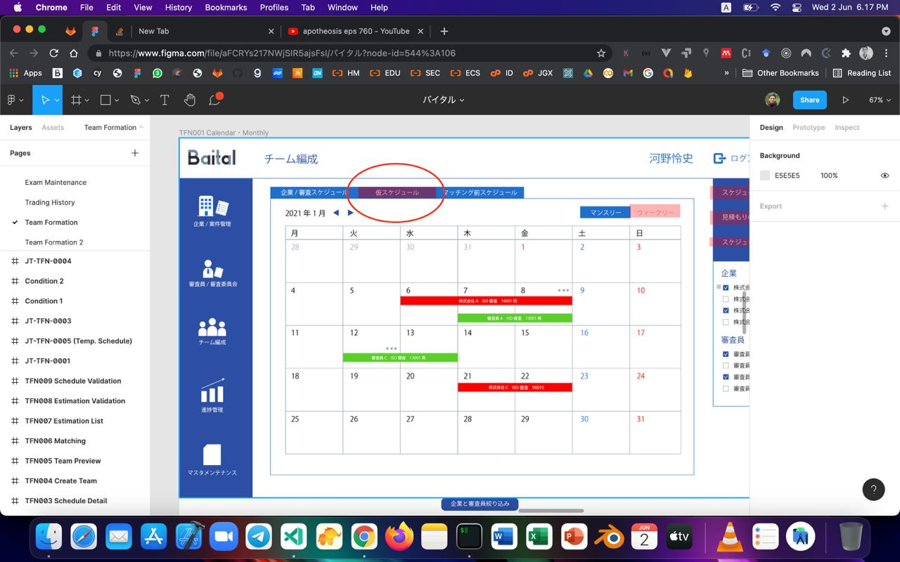

Selected work / Proof in practice
Systems with a job to do.
Three snapshots across active products, enterprise modernization, and operational software.
01 / Active product
YoCateTin
Everyday spending, turned into structured records through a familiar chat workflow.
- Context
- Personal finance should not feel like maintaining a spreadsheet.
- Contribution
- Founder-led product direction, engineering, and deployment.
- Scope
- AI-assisted workflow · Web application · Active product
Open live product
↗
 Product dashboard / conversation-led input
Product dashboard / conversation-led input
02 / Enterprise modernization
Japan enterprise platform
Bringing a 20-year-old desktop system into a maintainable web platform.
- Context
- An established operational system needed a modern browser-based future.
- Contribution
- Translated 200+ UI designs and supported migration from MySQL to Oracle 12c.
- Stack
- Laravel 7 · Vue.js · Laravue · Oracle 12c
Confidential client · Verified scope only

Scheduling interface / enterprise workflow
03 / Maritime operations
SAL operations
Operational tools for fleet, river, jetty, and vessel workflows.
- Context
- Field and operations teams need current status across moving assets.
- Contribution
- Web and mobile workflows, monitoring, and operational integrations.
- Scope
- Enterprise system · Mobile workflow · Maritime operations
User-controlled walkthrough / no autoplay
How I contribute / 04 modes
Build.Modernize.Keep it running.
Product thinking, engineering, and operations connected into software that remains useful over time.
- 01
Product engineering
Web and mobile products shaped around practical workflows.
Proof / YoCateTin
- 02
- 03
- 04
Applied AI
AI features integrated into focused product workflows.
Working set Node.js / TypeScript / PHP / Rust / Vue / Next.js / Flutter /
PostgreSQL / MySQL / Oracle / AWS / GCP
EducationInformatics Engineering
Politeknik Negeri Samarinda
Result3.91 / 4.00
Grade point average
English programICEE
One-year program completion

Course certificates

Historical course completions

Database Foundations

Course completions
Google Skills
Achievements & badges
ICEE
English program completion
Featured
How a Cloudflare Origin CA and Nginx solved an SSL error during a move from Vercel to Google Cloud.
Read the article ↗
Tooling
AI systems